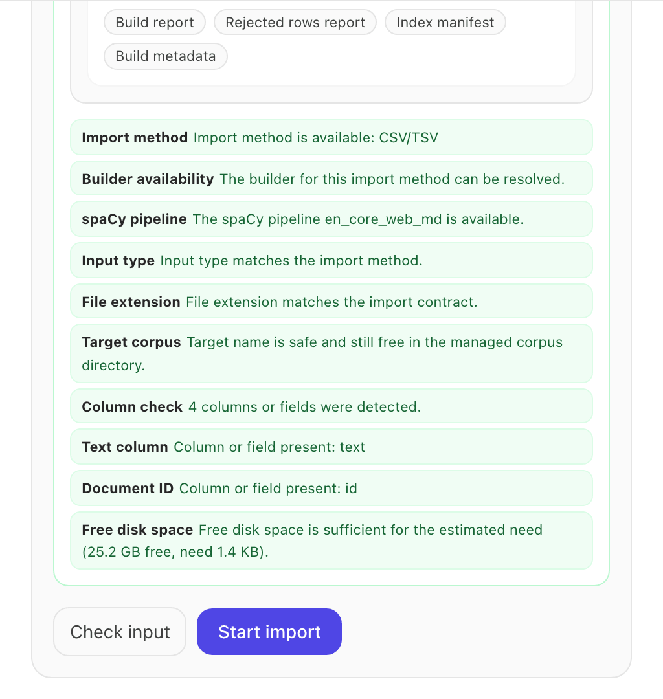
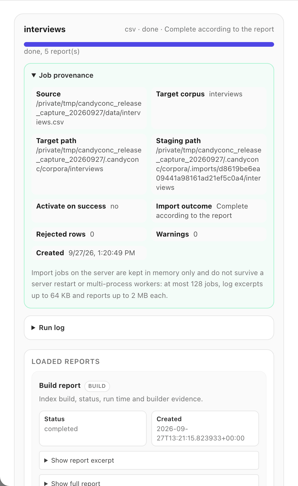

Import a corpus#
An import reads your texts from a file, annotates them with a spaCy pipeline,
and builds the corpus index that every search and analysis uses. You can
import in the interface, in the corpus manager, or on the command line with
candy import. Both ways use the same importers and write the same index.
This guide covers CSV and TSV tables, JSONL files, Parquet files, and plain
text files. For
VRT and CWB corpora see Import VRT or an existing CWB corpus,
and for several versions of the same text see
Import paired versions of source texts.
Before you begin#
The file must be on the computer where CandyConc runs. The corpus manager reads a path on that computer. There is no upload from the browser.
Decide on the annotation pipeline, for example
en_core_web_smfor English, and download it withcandy pipelineif you want lemmas and parts of speech. See Choose language and annotation layers.CandyConc estimates the disk space an import needs as 2.5 times the size of the input file and keeps another 5 GB free. If the free space is smaller, the import check stops with a message about free space. The limits can be changed, see Configuration reference.
Prepare the file#
For interviews stored in a spreadsheet, save the table as CSV or TSV before importing it.
Each format holds one document per row, line, or file:
Format |
One document is |
Text |
Metadata |
|---|---|---|---|
CSV or TSV ( |
a row |
the column |
the columns you name. The delimiter is detected |
JSONL ( |
a line with one JSON object |
the field |
the fields you name |
Plain text ( |
a file, or a paragraph with |
the file content |
the name of the parent folder, as the field |
Parquet ( |
a row |
the column |
the columns you name |
An ID column is optional. With an ID column, CandyConc shows your IDs as document names. Without it, CandyConc numbers the documents.
The examples on this page use a file interviews.csv:
id,text,speaker,year
int01,"We moved to the city in the spring. The rent was high, but the work was steady.",A,1998
int02,"My mother kept a garden behind the house. She grew beans, tomatoes and roses.",B,1998
int03,"The factory closed in the winter. Many families left the town that year.",A,2004
int04,"I still remember the river in flood. The water reached the church steps.",C,2004
int05,"We found work again after a long search. The new job paid less, but it was close to home.",B,2011
int06,"The school opened a library for the town. Children read there every afternoon.",C,2011
Import in the interface#
In the top bar, click Manage corpora (the database icon).
The panel Corpus manager opens on the tab Corpora. The section Import workflow shows the four steps of an import: source and method, preflight check, evidence, import.
Under Format, choose CSV/TSV.
In Target name, enter a name for the corpus, for example
interviews. The name becomes the folder of the index in the CandyConc data folder and the name in the corpus selector.In Server file, enter the full path of the file, for example
/Users/you/data/interviews.csv.Fill in the options of the format:
Corpus language (option
language): English (en). CandyConc fills in the standard pipeline of the language,en_core_web_md, in Annotation pipeline (spaCy) (spacy_model). You can enter another pipeline there, orblank:enfor tokenization only.ID column (
id_column):id.Metadata columns (
meta_columns):speaker, year.Generate dependency relations (
enable_deps) is on. Leave it on if you want word sketches and dependency search.Keep the original spacing (
capture_whitespace) is on. Concordance lines and texts then read as written, for examplesoul. No wordsinstead ofsoul . No words, see Original spacing.
Click Check input.
CandyConc checks the input without changing anything and lists the result of each check: the import method, the pipeline, the file type, the target name, the columns found, the text and ID columns, and the free disk space. A failed check names the problem.
Click Start import.
The job appears under IMPORT JOBS with its progress. When it has finished, it shows done and Complete according to the report, with the number of rejected rows and links to the reports: the build report, the rejected rows report, the index manifest, and the build metadata. The new corpus is listed under CORPUS CATALOG and in the corpus selector in the top bar, with its number of tokens. Select it there to work with it.
To make the new corpus the active one right away, select Use as the active working corpus after a successful import before you start the import.


The preflight checks for the synthetic example file interviews.csv of this page. All checks passed, and Start import is available.#


The finished import of the synthetic example file with its provenance and its reports.#
Import on the command line#
Run candy import with the input file, the folder of the new index, the
language, and the metadata columns. With the application bundle, write
./candyconc import instead of candy import.
candy import --input interviews.csv --output ~/.candyconc/corpora/interviews --language en --id-column id --meta-columns speaker year
Option |
Meaning |
|---|---|
|
the file, or a folder of text files |
|
the folder of the new index. Folders in |
|
|
|
the columns or fields with the text and the document ID (default |
|
the columns or fields to keep as document metadata, separated by spaces |
|
a label for the origin of the texts, stored as the metadata field |
|
the language of the texts as an ISO 639 code, for example |
|
a pipeline of your choice instead, for example |
|
import without dependency relations. With a pipeline that has a parser, they are added by default |
|
add named entities |
|
do not store the original spacing. Lines then show every token followed by a space |
|
plain text only: one document per paragraph |
The import prints its progress. The last line names the folder of the new
index. If CandyConc is running, the corpus appears the next time you open
the corpus selector. candy import --help lists all options, and the
Command line reference describes them.
To replace a corpus with a new import, run candy import with the folder of
that corpus as --output. CandyConc builds the new index in a hidden folder
next to it and swaps it in when the import has finished. If the import fails,
the old corpus stays as it was. A running CandyConc opens the new index with
the next request, so you do not need to restart it. Run your search again to
see results from the new texts.
Metadata#
Only the columns or fields you name become document metadata. Their values are stored as text. In the interface they appear in the document panel, as filters in Filter / Subcorpus, and as fields for trends and comparisons. See Filter by document metadata.
Every document also has the fields source and doc_id. source is the
label from --source or, without it, the name of the format.
Rows that are left out#
Rows that cannot become a document, for example rows with an empty text
column, are left out of the index. The import continues and records them in
the file reject_report.json in the index folder, with the number of rows
seen, the number rejected, and the reason for each. In the interface, the
job shows the same numbers in the rejected rows report. With
--reject-policy fail_fast (option Reject policy in the interface), the
import stops at the first such row instead.
Other formats#
The corpus manager and candy import also accept Hugging Face datasets.
A Hugging Face import needs the optional package group hf, see Install the Python package.
The options of every format are listed in Input formats.
Result#
The new corpus is in the corpus catalog. Select it in the corpus selector,
enter a word in the search field, and press Enter to see its
concordance. For the example file, cql:[lemma="work"] finds 2 hits in the
documents int01 and int05.